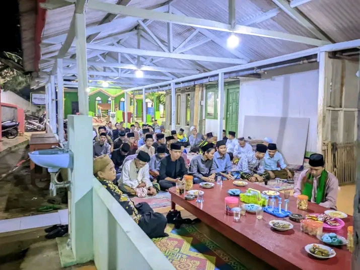
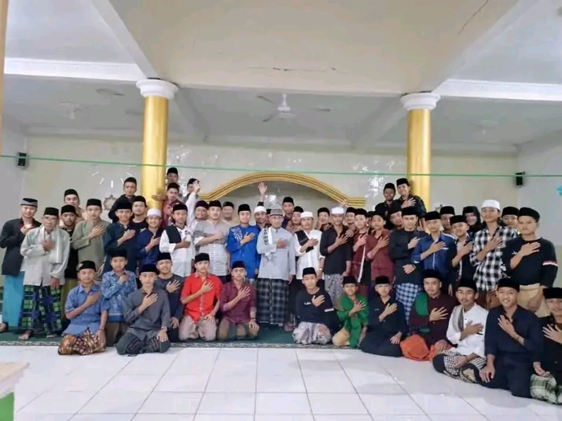
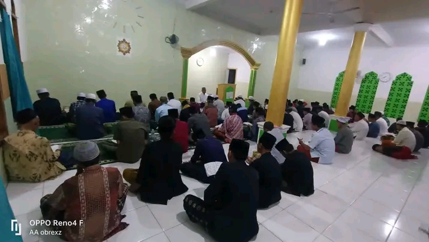

Sejarah Pesantren
Pesantren Nurul Mu'min berdiri sejak tahun 1990 sebagai pusat pendidikan Islam yang berkomitmen mencetak generasi Islami beriman, berilmu, dan berakhlak mulia. Sejak awal berdirinya, pesantren ini telah menjadi tempat menuntut ilmu agama sekaligus membina santri agar mampu berkontribusi positif bagi masyarakat.
Visi
Menjadi pusat pendidikan Islam yang melahirkan generasi beriman, berilmu, berakhlak mulia, serta mampu berkontribusi positif bagi agama, bangsa, dan dunia.
Misi
- Membina akhlak mulia.
- Menanamkan nilai-nilai kejujuran, disiplin, tanggung jawab, dan kepedulian sosial.
Alamat Pesantren
Jl. Ciranjang Sawah, Desa Karangmekar, Kecamatan Cimanggu, Kabupaten Sukabumi.
Galeri Pesantren


